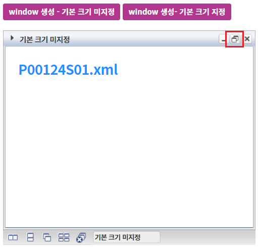
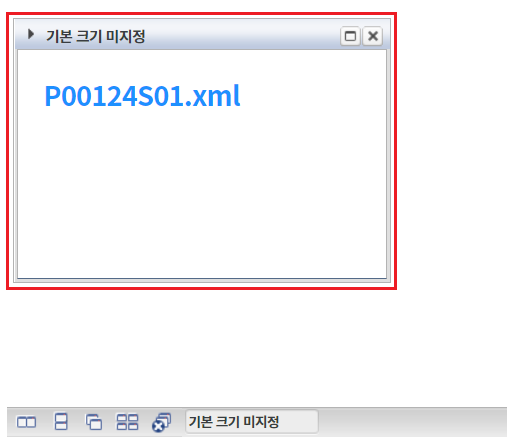
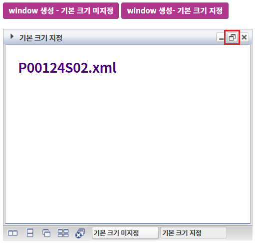
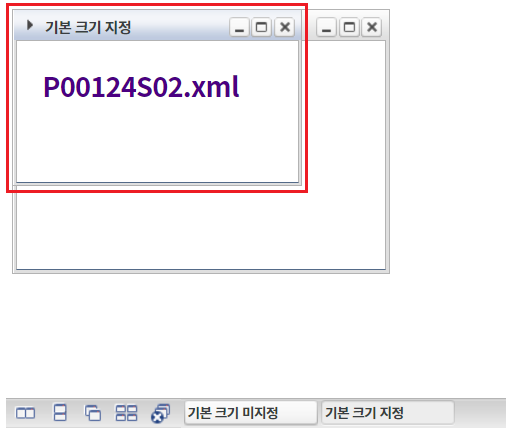
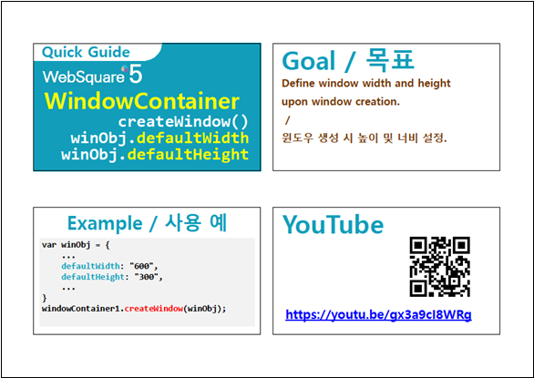

Window의 기본 창의 크기를 지정하는 예제입니다. Window별 기본 창의 크기를 Window 생성 API "createWindow"의 옵션 "defaultWidth", "defaultHeight"로 지정할 수 있습니다.
window 생성 - 기본 크기 미지정
window 생성- 기본 크기 지정
버튼 window 생성 - 기본 크기 미지정을 클릭합니다.
생성된 윈도우 "기본 크기 미지정"의 타이틀 영역의 아이콘 "창 사이즈 복원"을 클릭합니다.
[브라우저(Chrome) 실행 예시]

윈도우의 크기가 기본 설정 값의 크기(300px X 210px)로 변경됩니다.
[브라우저(Chrome) 실행 예시]

버튼 window 생성 - 기본 크기 지정을 클릭합니다.
생성된 윈도우 "기본 크기 지정"의 타이틀 영역의 아이콘 "창 사이즈 복원"을 클릭합니다.
[브라우저(Chrome) 실행 예시]

윈도우의 크기가 230px X 140px로 변경됩니다.
[브라우저(Chrome) 실행 예시]

STEP1. 원하는 시점에 Window 생성 스크립트를 작성합니다.
[소스 코드 예시]
//예제 파일의 경우 scwin.btn_ex2_onclick에 작성되어 있습니다. //windowContainer "wdc_exam1"에 윈도우 생성하기 wdc_exam1.createWindow({ "title": "기본 크기 지정", "frameMode": "wframe", "src": "/page/P00124S02.xml", "windowId": "w_P00124S02", "defaultWidth": "230px", //기본 너비 지정 "defaultHeight": "140px" //기본 높이 지정 });
createWindow( title , iconUrl , src , windowTitle , windowId , openAction , closeAction , windowTooltip , windowHeaderHTML , options , frameMode )
[웹스퀘어5 SP5 개발 가이드] WindowContainer
링크 : https://docs1.inswave.com/sp5_user_guide/2059d4ce88b2fc16#c65cb349eb266637
[웹스퀘어5 SP5 개발 가이드] WindowContainer - 윈도우 생성
링크 : https://docs1.inswave.com/sp5_user_guide/2059d4ce88b2fc16#d51dab08fdc52bc4
[웹스퀘어5 SP5 개발 가이드] WindowContainer - 윈도우 기본 크기 지정
링크 : https://docs1.inswave.com/sp5_user_guide/2059d4ce88b2fc16#323f5e06c0bdc2cb
WindowContainer - 윈도우 기본 크기 지정
링크 : https://youtu.be/gx3a9cI8WRg
